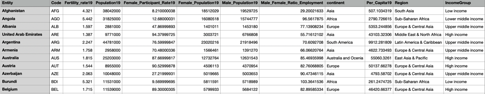

Overview of the Project:
The exploratory project shows the socio-economic indicators such as women's fertility rate, female employment participation rates, and female over male employment ratio can affect the economic conditions in terms of regions in the world. The bubble chart shows an average women fertility rate in the country, the country's population, and GDP (Gross Domestic Product) Per capita in bubble chart with showing in different colors in terms of region, like North America, East Asia & Pacific, Latin America & Caribbean, Middle East & North Africa, Europe & Central Asia, and South Asia. The bar charts demonstrate female employment rates and females over male employment ratios in the region, sorting through the lowest to highest percentage. The data have collected from Visit World Bank.Org! . I have collected, cleaned, and combined data. For data visualization, I have used D3, and JavaScript.
Here are a few of the records of the data.

What is GDP Per Capita?
According to www.investopedia.com, the gross domestic product of a country is an economic indicator which is the value of all productions such as goods and services made in a country in a specific time. The GDP per capita has calculated by dividing the GDP of a country by its population. It defines a person's income in a country in a specific year.
Bubble Chart:
Bar Charts: